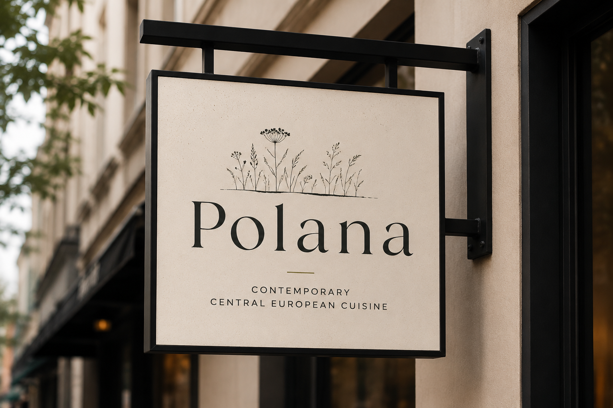
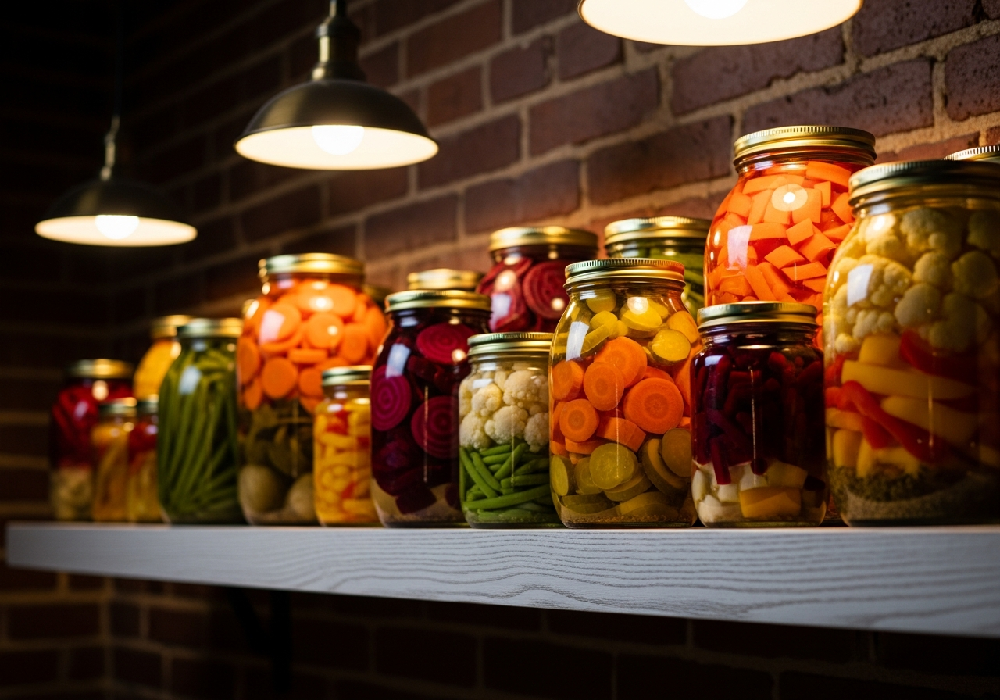
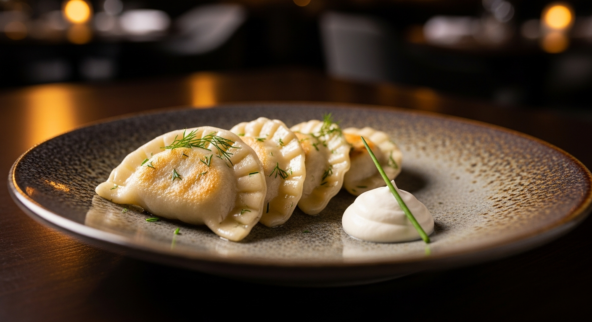
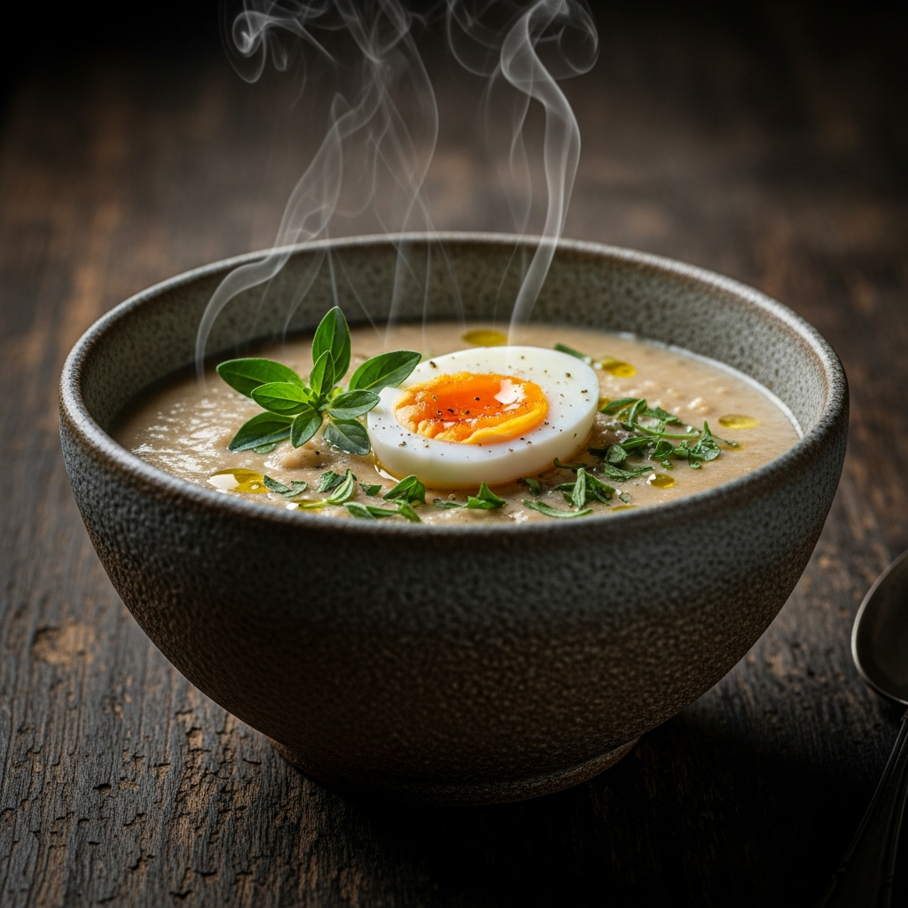

Spring
Asparagus, fresh herbs, spring onions, radish

Contemporary Central European Cuisine
Polana (poh-LAH-nah) means "a clearing in the forest" in Polish. Our menu is a celebration of the rich flavours, ingredients and stories of Central Europe, reimagined with modern technique and a focus on seasonal, local ingredients.
"Inspired by tradition. Made for today."

Our menu rotates with the seasons, rooted deeply in the agricultural tradition of Central Europe.
Asparagus, fresh herbs, spring onions, radish
Wild berries, cucumber, dill, fresh greens
Wild mushrooms, pumpkin, hazelnuts, buckwheat
Root vegetables, cabbage, beetroot, dried fruits, warming broths


